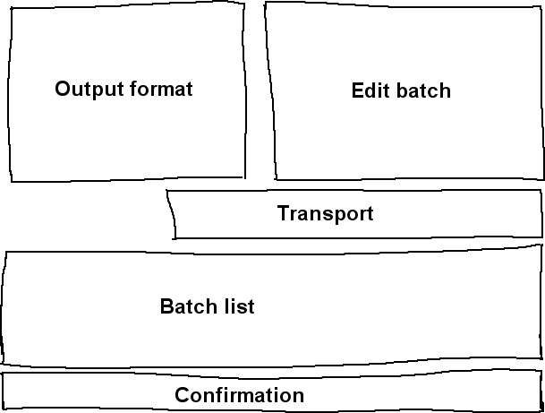

.
.
| [ << ] | [ >> ] | [Top] | [Contents] | [Índice] | [ ? ] |
Idealmente, toda mídia seria armazenada em discos rígidos, CD-ROM, flash ou DVD e carregá-la no Cinelerra seria uma questão de carregar um arquivo. Na realidade, muito poucas fontes de mídia podem ser acessadas como um sistema de arquivos mas, ao invés disso, dependem de mecanismos de transporte de fita e mecanismos de entrada/saída para transferir a informação para o computador. Esses tipos de mídia são importados para o Cinelerra através da caixa de diálogo de Gravação.
O primeiro passo em uma gravação é configurar o dispositivo de entrada. Em Configurações->preferências há um número de parâmetros de gravação descritos na configuração de See section Gravação. Estes parâmetros se aplicam à gravação não importando quais sejam as configurações do projeto, já que os parâmetros de gravação normalmente se relacionam à capacidade máxima do hardware de gravação, enquanto as configurações de projeto variam.
Vá para Arquivo->gravação para gravar a partir de uma fonte entrada/saída. Isso requerirá um formato de saída muito parecido ao exigido pela função de render. Uma vez que isso esteja feito, a janela de gravação e o monitor de gravação aparecerão.
A janela de gravação possui diferentes seções. Enquanto vários parâmetros mudam dependendo de se o arquivo possui áudio ou vídeo, algumas seções serão sempre as mesmas.

Áreas de janela de gravação
A gravação no Cinelerra é organizada em torno de grupos. Um grupo essencialmente define um arquivo de saída distinto para a gravação. Por agora, você pode ignorar completamente o conceito de grupo ("batch") e gravar simplesmente apertando o botão de gravação .
O botão de gravação abre o arquivo atual de saída caso este não esteja aberto e escreve a informação capturada nele. Use o botão de parar ("stop") para parar a gravação. A gravação pode ser continuada com o botão de gravação sem apagar o arquivo neste ponto. No caso de um arquivo de vídeo, existe um botão de gravação de um quadro único  , que captura apenas um quadro.
, que captura apenas um quadro.
Quando mídia suficiente estiver gravada, escolha um método de inserção do menu Estratégia de Inserção e aperte fechar.
Agora chegamos ao conceito de grupos ("batches"). Grupos tentam fazer o mecanismo entrada/saída parecer mais com um sistema de arquivos. Grupos são tradicionalmente usados para dividir a fita em diferentes programas e salvar os diferentes programas como arquivos diferentes ao invés de gravar direto uma fita inteira. Devido ao alto custo de desenvolvimento de mecanismos de controle preciso de quadros, o único uso dos grupos atualmente é gravar diferente programas durante diferentes momentos do dia. Isso ainda é útil para gravar programas de TV ou minutar períodos de vídeos conforme qualquer um que não pode bancar aplicações apropriadas sabe.
A janela de gravação suporta uma lista de grupos e dois modos de gravação: gravação interativa e em grupo. Gravação interativa acontece quando o botão de gravar é pressionado. A gravação interativa se inicia imediatamente e usa o grupo atual para determinar tudo, exceto o tempo de início. Por padrão, o grupo atual está configurado para se comportar como uma fita.
A gravação em grupo ocorre quando o botão início é pressionado. Na gravação em grupo, o tempo de início é o tempo em que o grupo começa a ser gravado.
Primeiro, você vai querer criar alguns grupos. Cada grupo possui certos parâmetros e métodos de ajuste.
A janela de gravação possui uma noção do grupo atual. O grupo atual não é o mesmo que o grupo que estiver em destaque na lista de grupos. O texto do grupo atual fica colorido em vermelho na lista de grupos. O grupo em destaque é apenas exibido na seção de edição de grupos para edição.
Ao colorir o grupo atual de vermelho, qualquer grupo pode ser editado ao se deixá-lo em destaque, sem mudar o grupo a ser gravado.
Todas as operações de gravação acontecem no grupo atual. Se há vários grupos, deixe em destaque o grupo desejado e aperte ativar para torná-lo o grupo atual. Se o botão início for pressionado, o grupo atual pisca para indicar que está esperando pelo tempo de início no modo de grupo. Se o botão de gravação for pressionado, o grupo atual é gravado imediatamente no modo interativo.
Nos modos de grupo e interativos, quando o grupo atual termina de gravar, o próximo grupo é ativado e performado. Todas as gravações futuras serão feitas em modo de grupo. Quando o primeiro grupo termina, o próximo pisca até que seu horário de início chegue.
Interrompa tanto o grupo quanto a operação interativa apertando o botão de parar ("stop").
Finalmente, há o botão  rebobinar. Tanto para gravações em grupo ou interativas, o botão de rebobinar faz o grupo atual fechar seu arquivo respectivo. A próxima operação de gravação no grupo atual apaga o arquivo.
rebobinar. Tanto para gravações em grupo ou interativas, o botão de rebobinar faz o grupo atual fechar seu arquivo respectivo. A próxima operação de gravação no grupo atual apaga o arquivo.
Às vezes no processo de gravação e no processo de configuração, você precisará definir e selecionar os canais de tuner para tanto gravar quanto para reproduzir para algum lugar. No caso dos drivers de gravação Video4Linux e Buz, canais de tuner definem a fonte. Quando o driver Buz também é usado para reprodução, os canais de tuner definem o destino.
Para definir os canais de tuner, pressione o botão  canal. Isso traz a janela de edição de canais. Nesta janela, você pode adicionar, editar e escolher canais. Para alguns drivers de vídeo, você também pode ajustar a qualidade da imagem.
canal. Isso traz a janela de edição de canais. Nesta janela, você pode adicionar, editar e escolher canais. Para alguns drivers de vídeo, você também pode ajustar a qualidade da imagem.
A operação adicionar traz uma caixa de edição de canal. O título do canal aparece na lista de canais. A fonte do canal é a entrada na tabela de freqüência física do tuner correspondente ao título.
Um bom ajuste no diálogo de edição de canal ajusta a freqüência física levemente se o driver suporta este tipo de coisa. A tabela de normalização ("norm") e freqüência juntas definem qual tabela de freqüência é selecionada para definir as fontes. Se o dispositivo suporta múltiplas entradas, o menu de entradas as seleciona.
Para escolher os canais, deixe em destaque o canal na lista e pressione mover para cima ou mover para baixo para movê-lo.
Uma vez que os canais sejam definidos, o item fonte na janela de gravação pode ser usado para selecionar canais para gravação. A mesma função de seleção de canal também existe na janela de monitoramento de gravação. Saiba que as seleções de canal na janela de monitoramento de gravação e na janela de gravação são armazenados no grupo atual.
Para alguns drivers, uma opção para Trocar campos pode estar visível. Estes drivers não captam a ordem dos campos direito todas as vezes sem intervenção humana. Use este campo para fazer com que as linhas pares e ímpares sejam gravadas na ordem correta.
dvgrab é uma ferramenta de linha de comando ótima e simples de usar para capturar vídeos a partir de uma câmera DV. Quando evocado, automaticamente colocará sua câmera em modo de reprodução ("play") e começar a armazenar os vídeos em seu disco rígido. Os arquivos de vídeo serão etiquetados sequencialmente, como `001.avi', `002.avi' e assim por diante.
Para instalar o dvgrab, use o mecanismo de instalação de sua distribuição preferida (apt, rpm, deb, etc) ou dê uma olhada na página da internet do dvgrab.
Capturando vídeo em quatro passos fáceis:
cd para esta pasta
dvgrab --buffers 500 e RETURN
A opção `--autosplit' é bastante útil. Ela dividirá as cenas de acordo com o código de tempo. Entretanto, isso só funciona quando capturando a partir de uma câmera DV. Ele não funcionará quando estiver capturando a partir de um conversor analógico/digital como o Canopus ADVC110.
Leia o manual do dvgrab para obter mais informações sobre as características do programa.
| [ << ] | [ >> ] | [Top] | [Contents] | [Índice] | [ ? ] |
This document was generated on Fevereiro, 6 2016 using texi2html 1.76.